I/O接口与外设
1. 接口概述
1.1 接口概念
接口是CPU与“外部世界”的 连接电路，负责在CPU与“外部世界”之间“中转”各种信息。
在计算机系统中，接口 介于系统总线与外部设备之间，可分为 存储器接口 和 I/O接口 两类——存储器接口是CPU与存储器（如主存）之间的连接电路；I/O接口则是CPU与外部设备之间的连接电路，如图2-1所示。
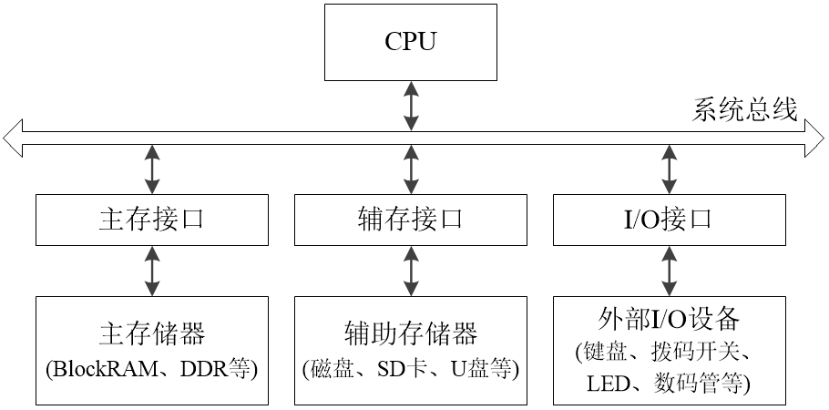
1.2 接口的作用与功能
当CPU需要从“外部世界”获取信息，或向其输出信息时，就需要依靠各式各样的外部设备。
现今使用最广泛的计算机是数字计算机。在数字计算机中，指令和数据都以数字信号“0”和“1”进行表示、传输、运算和存储。而外部设备不仅种类多、功能杂，其数据格式、工作原理也各不相同。为了使得CPU能够高效、规范地使用外部设备，我们需要为外部设备设计相应的接口，以适配外部设备和CPU之间的差异。
在计算机系统中，接口受CPU控制，外部设备则受接口控制，如图2-2所示。
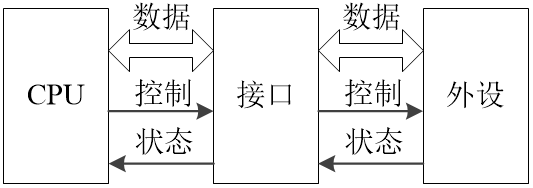
补充说明 
需要注意的是，对某些外设而言，图2-2中的数据信号线可能是单向的。
接口通常具有以下功能：
- 信号转换功能（预处理功能）
完成总线信号与I/O设备信号之间的转换，包括信号的逻辑关系、时序配合、电平转换、串并转换等。
- 数据缓存功能
I/O接口中含有寄存器、锁存器或其他缓存存储器，用于实现CPU和外设之间的数据缓存功能。接口中用于暂存数据的缓存器称为I/O接口对CPU的 数据口。
- 接受和执行CPU命令功能
I/O接口中含有存放CPU命令码的寄存器，该寄存器称为I/O接口对CPU的 命令口。接口工作时，将根据命令口中的命令码，产生相应的控制信号，控制外设完成不同的操作。
- 控制和监视外设执行功能
I/O接口中还含有存放外设状态信息的寄存器，该寄存器称为I/O接口对CPU的 状态口。接口工作时，将实时监视外设的执行状态，并适时更新状态寄存器。CPU通过读取状态口，即可获取外设的执行状态。有时I/O接口也需要根据状态寄存器的值来产生外设工作所需的控制信号。
- 设备选择功能（选址功能）
CPU通过不同的地址访问不同的I/O接口以及接口中的设备。I/O接口通过地址译码器，产生设备选择信号，以选择对应的外设与CPU进行通信。
补充说明
（1）接口和设备不一定是一对一的关系。一个接口可能含有多个数据口、命令口和状态口。
（2）每一个数据口、命令口或状态口均可由CPU通过地址直接访问。
1.3 I/O接口电路
I/O接口电路的核心是数据口、命令口、状态口和控制逻辑，其基本结构如图2-3所示。
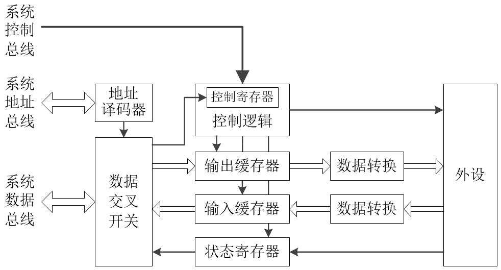
由图2-3可知，CPU通过系统总线实现与I/O接口电路的交互。显然，CPU需要通过地址来区分当前访问的是命令口、数据口还是状态口。
举个栗子 
假设某外设接口的基地址为0xFFFF_FFA0，且命令口、数据口和状态口的偏移地址分别为2'b00、2'b01和2'b10。
当CPU想初始化该外设时（需要访问命令口），需要向0xFFFF_FFA0写入初始化命令。此时，地址0xFFFF_FFA0将通过系统地址总线传输到接口电路的地址译码器；初始化命令所对应的二进制编码数据将通过系统数据总线传输到接口电路的数据交叉开关；“写”信号将通过系统控制总线传输到接口电路的控制逻辑。然后，地址译码器对收到的0xFFFF_FFA0地址进行译码，发现当前地址的高30位等于 30'h3FFF_FFE8 且 最低2位等于 2'b00，说明此时被访问的是控制寄存器，则初始化命令将经过数据交叉开关，写入到控制寄存器。接下来，控制逻辑将根据控制寄存器的值，产生控制信号，控制外设完成初始化操作。
类似地，当CPU想读取该外设的运行状态信息时（需要访问状态口），需要读取0xFFFF_FFA2地址。此时，地址0xFFFF_FFA2将通过系统地址总线传输到接口电路的地址译码器；“读”信号将通过系统控制总线传输到接口电路的控制逻辑。然后，地址译码器对0xFFFF_FFA2的地址进行译码，发现当前地址的高30位等于 30'h3FFF_FFE8 且 最低2位等于 2'b10，说明此时被访问的是状态寄存器。接下来，控制逻辑将产生控制信号，控制外设将最新的状态信息写入状态寄存器，然后状态寄存器的新值将经过数据交叉开关，写入到系统数据总线。
2. 基本外设
2.1 外设的编址方式
I/O设备（即外设）通常有独立编址、统一编址两种编址方式。“独立”和“统一”指的是外设地址和主存地址的关系 —— 在独立编址模式中，外设的地址空间完全独立于主存地址空间之外，CPU需要通过特殊的IO指令才能访问外设；在统一编址模式中，外设和主存共用同一片地址空间，CPU可使用访存指令来访问外设。
miniRV和miniLA的外设均采用统一编址方式。32位的地址空间被划分成主存地址空间和I/O地址空间2部分 —— 最高64KB是I/O设备的地址空间（即0xFFFF_0000 ~ 0xFFFF_FFFF），其余则是主存地址空间（即0x0000_0000 ~ 0xFFFE_FFFF）。理论上，程序可用的最大主存空间为4GB减去64KB，实际应考虑主存物理介质的实际容量大小。
2.2 外设基地址及端口地址
外设I/O接口的地址由 基地址 和 偏移地址 组成。基地址相当于外设的身份ID，决定了CPU访问的是什么外设。偏移地址则决定CPU访问外设的哪个端口。
因此当程序希望控制外设完成某个特定的功能时，程序需要通过访存指令来访问特定的端口。
在本课程的SoC中，外设I/O接口的基地址和端口地址如表2-1所示。其中，地址信号的高20位决定外设的基地址，低12位决定端口地址。不同的端口通常用于实现不同的功能。例如，计时器I/O接口的基地址是0xFFFF_4000，并且具有0x000、0x008两个端口，这两个端口的功能分别是读取计时器的低32位和高32位。
| 外设 | 端口数 | 端口地址 | 端口属性 | 端口功能 |
|---|---|---|---|---|
| 拨码开关 | 1 | 0xFFFF_0000 | 只读 | 提供外部输入 |
| LED | 1 | 0xFFFF_1000 | 写 | 显示数据 |
| 数码管 | 1 | 0xFFFF_2000 | 写 | 显示数据 |
| UART | 4 | 0xFFFF_3000 | 只读 | 接收字符的队列缓存器，即RX FIFO |
| 0xFFFF_3004 | 写 | 发送字符的队列缓存器，即TX FIFO | ||
| 0xFFFF_3008 | 读 | 状态寄存器，用于记录RX FIFO和TX FIFO的状态等信息 | ||
| 0xFFFF_300C | 写 | 控制寄存器，用于初始化及控制UART | ||
| 计时器 | 2 | 0xFFFF_4000 | 只读 | 读取64位计时器的低32位 |
| 0xFFFF_4008 | 只读 | 读取64位计时器的高32位 |
2.3 I/O接口的读写访问
在RISC-V或LoongArch的RISC指令集架构中，只有Load指令和Store指令可以访存，且主存与外设统一编址。因此，在汇编程序里，访问主存和访问外设的差别仅仅是数据读写的地址不同。
一个外设的I/O接口可能包含多个不同的端口。程序希望控制外设完成某个特定的功能时，需要通过访存指令来读写相应的端口。
在C语言里，通常使用指针来访问外设。例如，由表2-1可知，数码管、计时器的I/O接口基地址分别是0xFFFF_2000、0xFFFF_4000，则有下列示例程序。
// 外设I/O接口的基地址
#define PERI_DLED_ADDR 0xFFFF2000 // 数码管
#define PERI_TIMER_ADDR 0xFFFF4000 // 计时器
// I/O接口中，各端口的偏移地址
volatile unsigned int *peri_digled = (volatile unsigned int*) PERI_DLED_ADDR;
volatile unsigned int *peri_timer_lo32 = (volatile unsigned int*)(PERI_TIMER_ADDR + 0x000);
volatile unsigned int *peri_timer_hi32 = (volatile unsigned int*)(PERI_TIMER_ADDR + 0x008);
int main()
{
// 读取计时器高32位的值
unsigned int timer_high = *peri_timer_hi32;
// 把数据显示到数码管
*peri_digled = timer_high;
return 0;
}
其中，volatile关键字用于防止编译器优化，保证CPU能够及时获取到外设的数据。每个外设的端口地址都被定义成相应的volatile指针，读写数据时，对指针解引用后再进行读写即可。
2.4 常用外设简介
FPGA开发板通常具有一定的外设资源，常见的外设包括12位VGA视频接口、10/100/1000Mbps以太网、蜂鸣器、麦克风、Micro SD卡、UART串口、矩阵键盘、数码管、LED、拨码开关、按键开关等。
以下介绍Minisys及EGO1常用的几种外设。
2.4.1 拨码开关和LED
拨码开关和LED是最基本的输入输出设备，常用于辅助硬件调试。
拨码开关拨到下档时，表示向对应的FPGA引脚输入低电平，否则输入高电平。LED则是从对应的FPGA引脚接收到高电平时点亮，否则熄灭。
Minisys开发板具有24个拨码开关和24个LED，如图2-4所示。
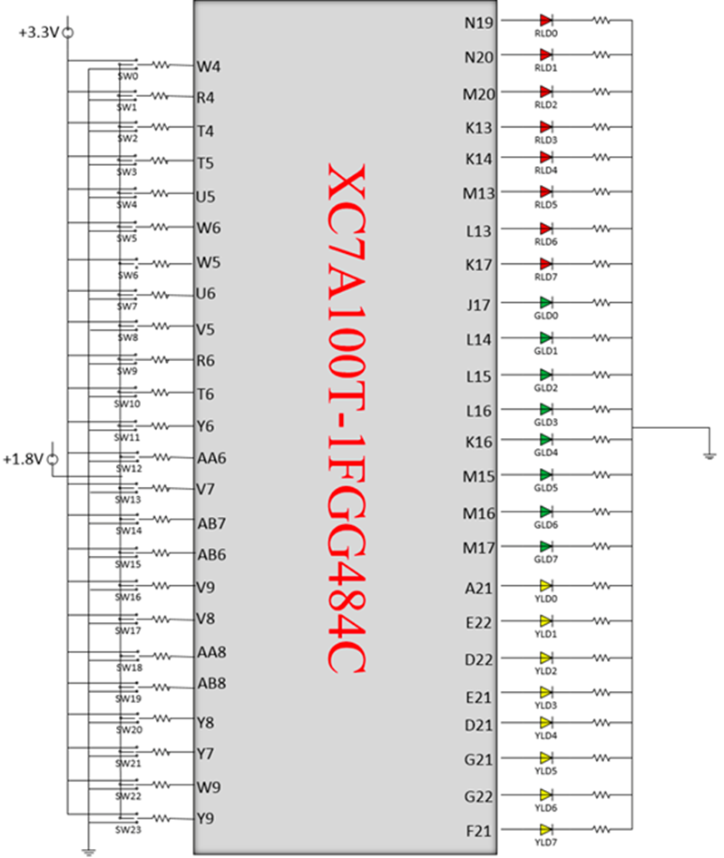
EGO1开发板包含16个拨码开关和16个LED，其中，16个拨码开关分成2组，左边8个是正常尺寸的拨码开关，右边8个是集成在一起的DIP小开关，如图2-4A所示。
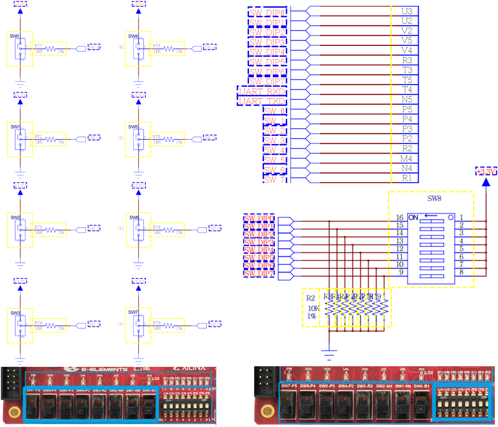
2.4.2 数码管
Minisys开发板有两个4位带小数点的七段数码管，其电路原理图如图2-5所示。其中，A7-A0是数码管8个位的使能信号（即 位选信号），而CA-CG及DP则对应各个位上的七个段以及小数点的触发信号（即 段选信号）。
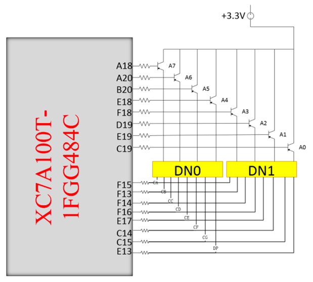
注意数码管的有效电平
Minisys开发板 的数码管位选信号和段选信号均为 低电平有效。
EGO1开发板 的数码管位选信号和段选信号均为 高电平有效。
关于EGO1开发板的数码管
EGO1开发板的8位数码管分为2组 —— 左边4位为第一组，右边4位为第二组。两组数码管具有各自独立的段选信号。实现时，可 使用assign语句，令第二组数码管的段选信号始终等于第一组的段选信号。
数码管本质上是LED灯。图2-6以最后侧的A0数码管为例，说明了7段数码管的内部结构。
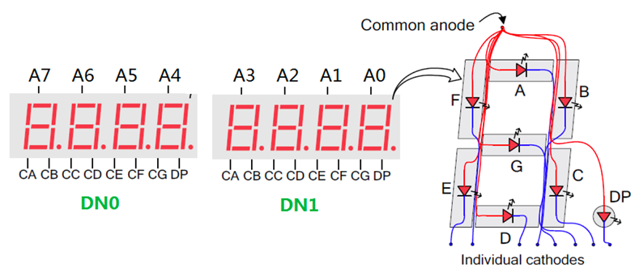
在图2-6中，A0数码管的A段连接到DN1的CA引脚，B段连接到DN1的CB引脚，以此类推。CA-CG及DP均为低电平有效，且A7-A4、A2-A0分别共用一组段选信号。因此，如果给DN0的CA引脚提供低电平时，数码管A7-A4的A段将被同时点亮；如果给DN1的CB引脚提供低电平时，数码管A2-A0的B段将被同时点亮。
此外，每一位数码管都有一个使能信号，因此使能信号位宽为8（A[7:0]）。A[7:0]通过反相器接到对应数码管的每一个段的阳极上，因此A[7:0]也是低电平有效的。
2.4.3 UART
UART串口是常用的嵌入式低速通信外设，只需TX、RX两根信号线即可在收发双方之间实现全双工通信。
UART通过数据帧通信。一个数据帧包含起始位、数据位、校验位和停止位，如图2-7所示。
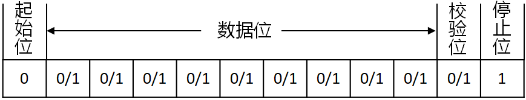
数据帧最常用的配置是“8N1”，即8个数据位、无校验位、1个停止位。
数据帧的每个位都需要按照波特率要求，维持一定的电平有效时间。比如波特率如果设置为115200bps，则数据帧的每个位需要维持 。
2.4.4 计时器
计时器也称定时器、定时计数器，是计算机硬件系统的常用外设。计时器能够实现 ns 级别的高精度计时，不仅能够给计算机系统提供时间基准，还能结合CPU的例外与中断处理机制，为操作系统的任务调度、延迟操作等功能提供底层硬件支持。
在本实验中，计时器由一个64位的计数器构成。复位之后，该计时器自动开始计数。
本课程的计时器外设具有2个端口（见表2-1），地址偏移量分别为0x00和0x08，分别用于读取计数器的低32位、高32位的值。
2.4.5 按键开关
开发板共有5个可供开发者自定义的按键开关，如图2-8所示。当某一按键按下时，其对应的FPGA输入为1，否则为0。
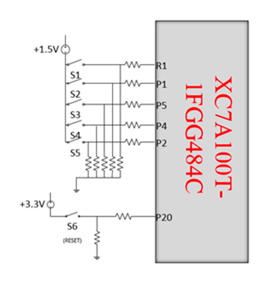
按键开关内部包含金属弹簧，按下和弹起时，金属弹簧发生振动，从而导致电平不稳定，此种现象称为按键开关的抖动。一般可采用计数器延迟的方法进行消抖，其基本思路是，检测到按键开关信号发生变化时，启动计数器延迟10~15ms，并再次读取按键开关的电平，如图2-9所示。
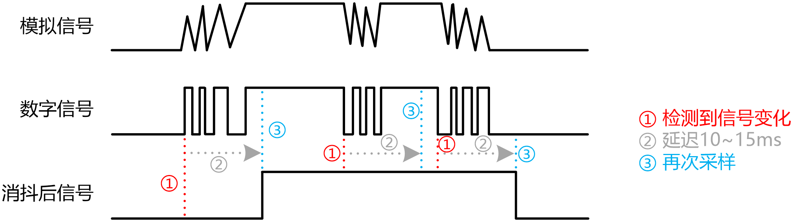
2.4.6 4×4键盘
Minisys开发板的4×4键盘通过4根行选线和4根列选线连接到FPGA芯片，如图2-10所示。
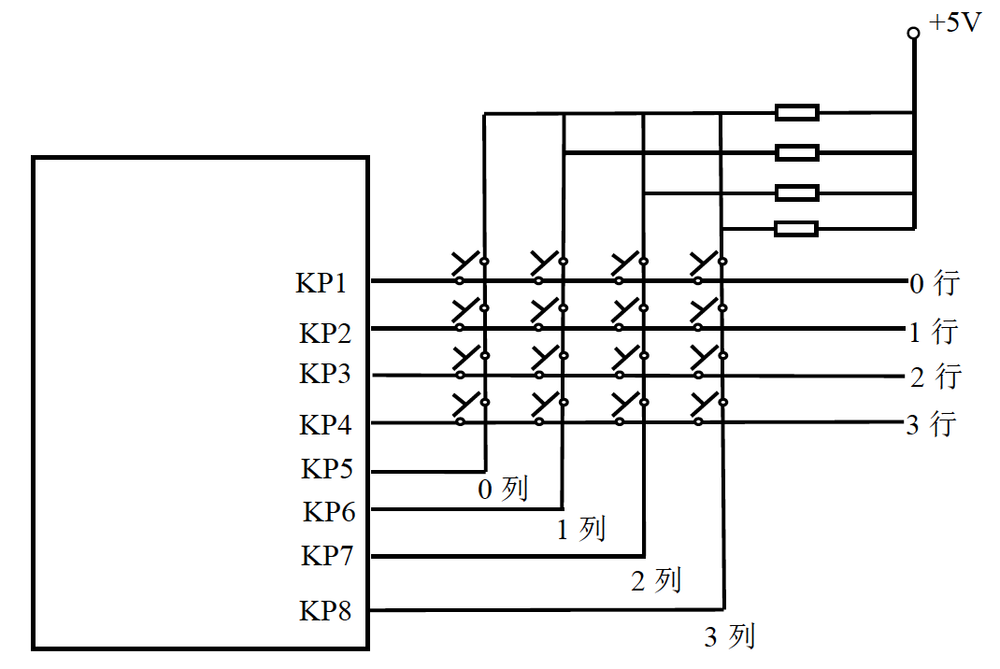
4×4键盘的基本原理是行列扫描。实现时，可通过移位寄存器或计数器生成4位流水灯信号，输出到行信号，然后读取列信号。通过判断行信号与列信号的取值，即可得出被按下按键的坐标。然后把按键坐标映射到对应的键值，即需要在程序中对扫描得到的坐标行、列信号的各种组合方式进行翻译。